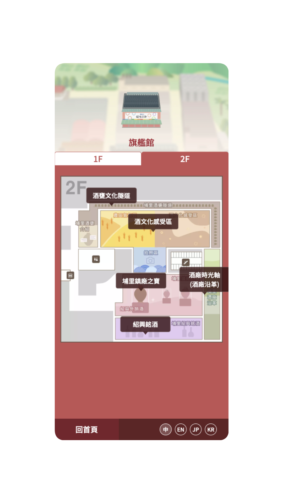
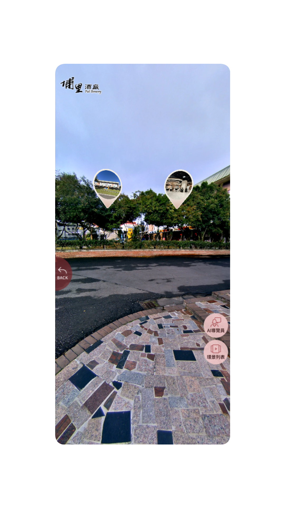
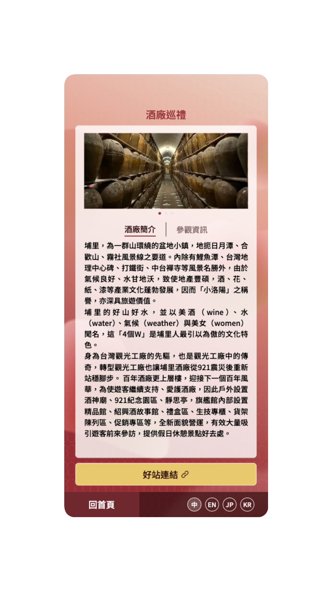
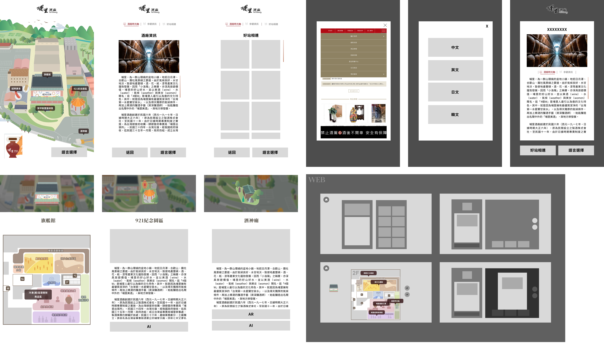
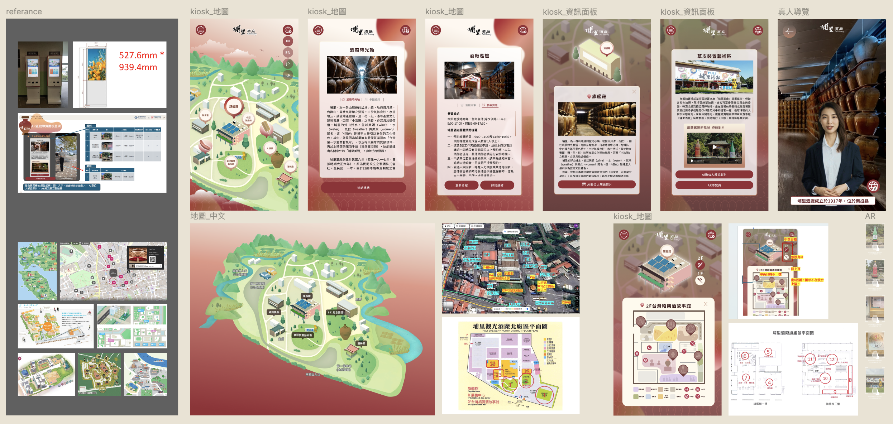
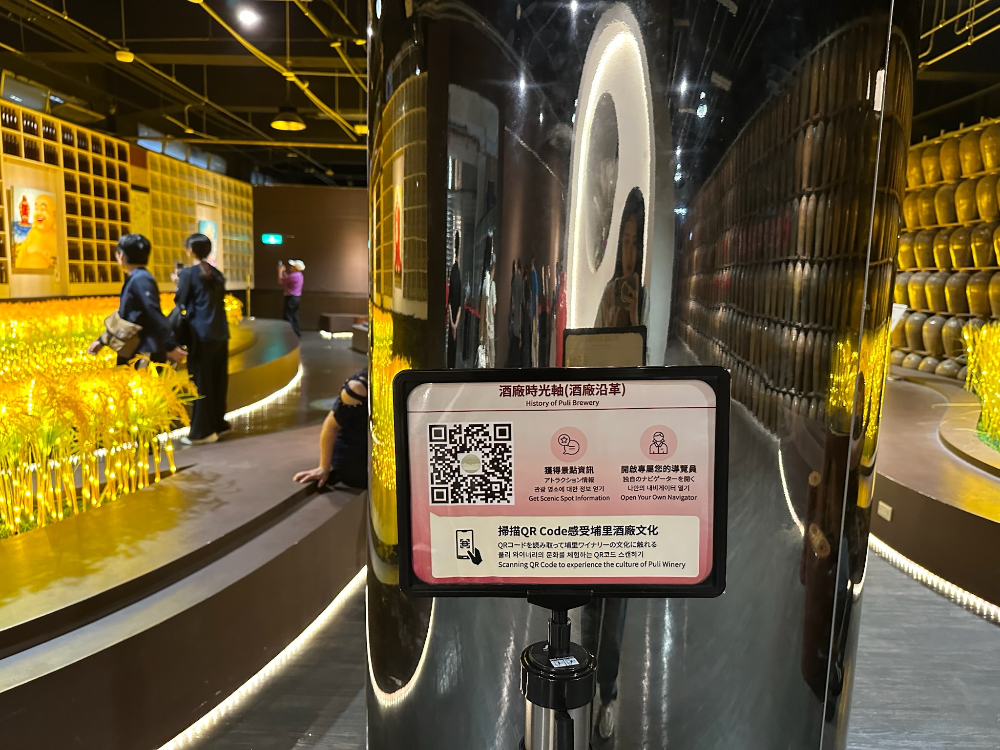
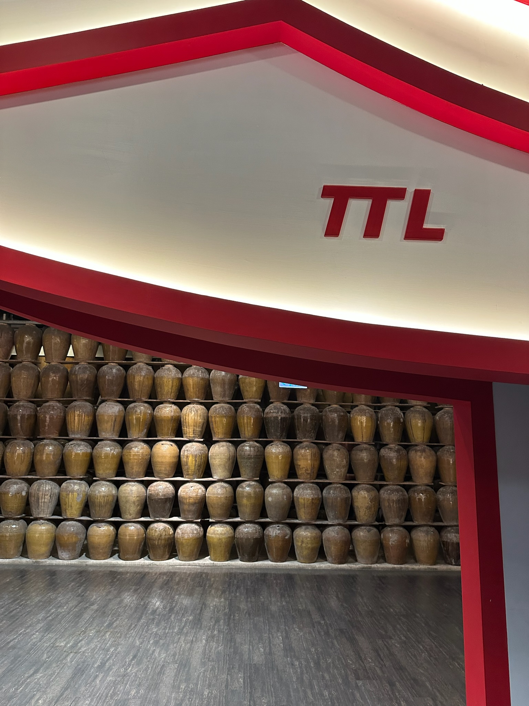
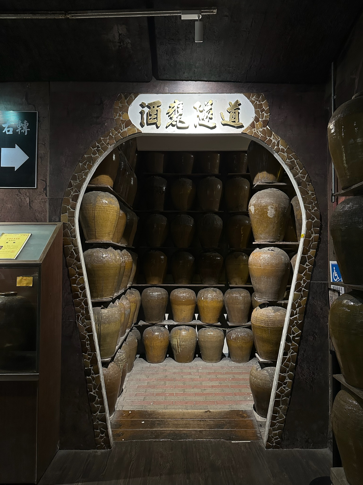

← BACK TO ARCHIVE
AI NAVIGATION · CROSS-DEVICE DESIGN SYSTEM · 2024—2025
Puli Brewery
VISIT LIVE SITE ↗
Shipped in 90 working days: one cross-device design system for a century-old brewery — unifying mobile, kiosk, AR, and 360° experiences across 13 sites and 4 languages, so every visitor gets the same quality of experience regardless of how they walk in.
The brewery's grounds are large and the circulation complex, and visitors span a wide range of generations and nationalities with very different expectations of what a "tour" should feel like. The core challenge was designing a single system that could serve independent travelers on mobile, tour groups on kiosk, and walk-ins scanning a QR code — without fragmenting into three disconnected products.
I started from the user journey — on-site field research to map circulation and dwell behavior across all 13 sites — then built a design system that could apply consistently across devices: shared interface standards and components for the mobile, kiosk, and QR-code entry points, extending the same hand-drawn map style into AR navigation and 360° panoramas, and structuring content across 4 languages (Chinese, English, Japanese, Korean) so the visual language and experience stayed consistent everywhere. I worked directly with the engineering team through iteration cycles (UI v1 → v2) to keep the component spec buildable, not just pretty.
The project launched in 90 working days, giving the brewery a single design system that serves visitors across languages and devices. The componentized spec also means new sites or languages can be added quickly without breaking consistency — the system scales, not just the launch.
From the hand-drawn park map to floor navigation, the AI tour guide, and 360° panorama exploration — these are the actual screens visitors use inside Puli Brewery.






From the original bid proposal and wireframes to iterated UI and a multilingual component library — the full design process behind the Puli Brewery navigation system, from concept to production.

Interface structure wireframe

Bid proposal stage · interface design pitch

UI v1 → v2 · iterating design directly with engineering

Multilingual component library spec
Field photos from the Puli Brewery grounds, including the walk-in QR-code entry point in real use.
 Park entrance · navigation app map in use
Park entrance · navigation app map in use

QR code signage · walk-in entry point Flagship hall entrance circulation
Flagship hall entrance circulation

Display wall · century-old liquor jars
Liquor jar tunnel · a moment on the grounds